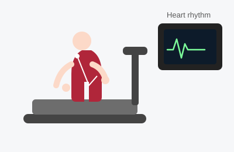

Treadmill (Exercise) Stress Test
A treadmill stress test checks how your heart responds to physical exertion. Many heart problems, especially blockages in the heart arteries, only show up when the heart is working hard — so walking on a treadmill while hooked up to a heart monitor is one of the simplest ways to "stress" the heart and watch how it reacts.

Duration
About 45–60 minutes total (treadmill portion 8–15 minutes)
Fasting
No food for 2–3 hours before; avoid caffeine the same day
Sedation
None
Recovery
None — drive yourself and resume activity
What Happens During the Test
Small sticky electrodes are placed on your chest and connected to an ECG (EKG) machine that continuously records your heart's electrical activity. A blood pressure cuff is placed on your arm. You then walk on a treadmill that gradually speeds up and inclines every few minutes (a standard protocol called the Bruce protocol), while your heart rhythm, blood pressure, and symptoms are monitored throughout. The goal is to get your heart rate to a target level or until you develop symptoms, significant ECG changes, or exhaustion, at which point the test is stopped and you are monitored during recovery as your heart rate returns to normal.
What the Patient Should Know
- Wear comfortable walking shoes and loose, comfortable clothing.
- Avoid caffeine (coffee, tea, soda, chocolate) on the day of the test — it can blunt the results.
- Eat a light meal 2–3 hours beforehand; do not come on a completely empty stomach, but avoid a heavy meal right before.
- Tell the office about all your medications beforehand — you may be asked to hold certain heart medications (such as beta-blockers) the morning of the test, since they can blunt your heart rate response.
- You will be asked about chest pain, shortness of breath, dizziness, or leg fatigue throughout — speak up right away if you feel anything unusual.
- Mild tiredness or muscle soreness afterward is normal, similar to any exercise.
Recovery
Recovery is immediate. After a short monitoring period to confirm your heart rate and rhythm return to normal, you can get dressed, drive yourself home, and go about your normal day, including work and regular activity.
Why It Is Done
- Evaluate chest pain or shortness of breath that occurs with exertion.
- Screen for coronary artery disease (blocked heart arteries).
- Assess exercise capacity and fitness for certain activities or surgeries.
- Check how well a heart condition or its treatment is responding to exertion.
If you cannot walk on a treadmill (due to arthritis, leg problems, or other limitations), or if your baseline ECG makes a standard stress test hard to interpret, your doctor may order a nuclear stress test or a stress echocardiogram instead.
Reliable Sources
- American Heart Association, Exercise Stress Test
- NHLBI, Heart Tests
This page is for general education only and does not replace advice from your doctor. If you have questions about your own test, please contact the office.